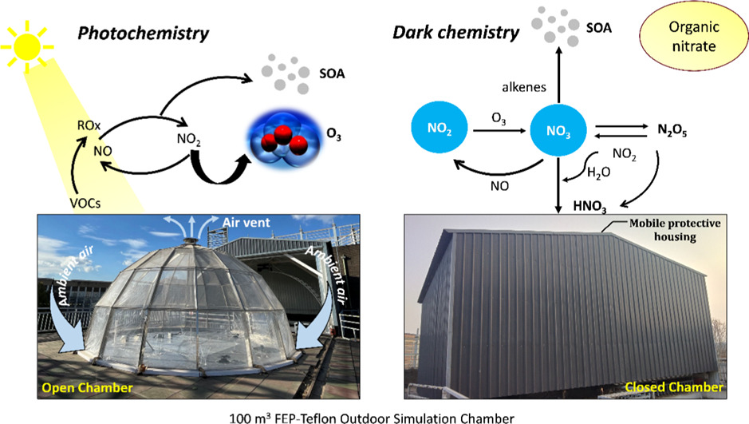
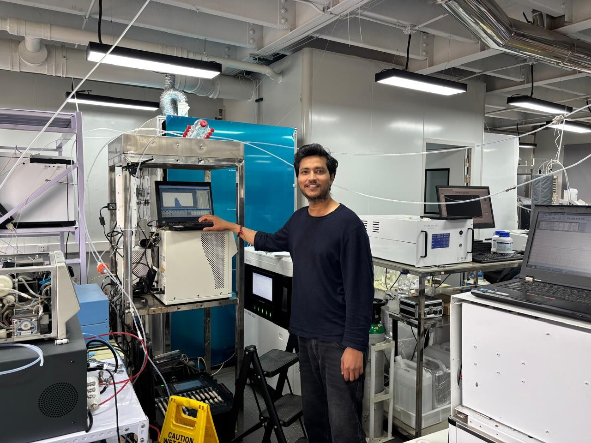

Dr. Ravi Yadav
Project Scientist III
Indian Institute of Tropical Meteorology (IITM), Pune
Atmospheric Chemistry • VOCs • Ozone • Aerosols • Air Quality
Atmospheric Simulation Chambers • Secondary Organic Aerosols


Indian Institute of Tropical Meteorology (IITM), Pune
Atmospheric Chemistry • VOCs • Ozone • Aerosols • Air Quality
Atmospheric Simulation Chambers • Secondary Organic Aerosols
I am a Project Scientist III at the Indian Institute of Tropical Meteorology (IITM), Pune. My research focuses on atmospheric chemistry, volatile organic compounds (VOCs), tropospheric ozone formation, secondary organic aerosols, atmospheric simulation chambers, and air-quality observations.

